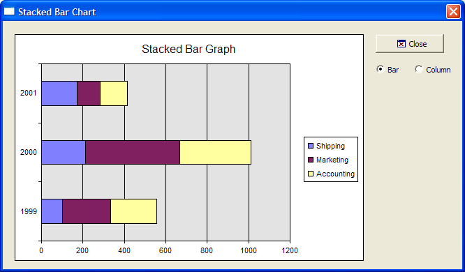

Bar Graph
This example shows how to use the Microsoft Office Chart ActiveX Control.

Example
 Note : To run this sample Xdialog script, you must have Microsoft Office installed on your machine.
Note : To run this sample Xdialog script, you must have Microsoft Office installed on your machine.
Example
Dimension variables and provide chart data.
dim categories[3] as C dim shipping[3] as N dim marketing[3] as N dim accounting[3] as N dim vl as P dim shared Chart as P dim Graph as P dim Graph.object as P dim Graph.class as C categories[1] = "1999" categories[2] = "2000" categories[3] = "2001" shipping[1] = 100 'value for 'shipping' department in 1999 shipping[2] = 211 'value for 'shipping' department in 2000 shipping[3] = 173 marketing[1] = 234 marketing[2] = 456 marketing[3] = 111 accounting[1] = 222 accounting[2] = 345 accounting[3] = 132 vl = local_variables() |
Define the dialog display code.
Graph.class="owc.chart" dlg_title = "Stacked Bar Chart" type = 1 'Refer to Complete List of Supported Chart Types dlg_source = <<%dlg% {can_exit=close} {startup=init} {lf}; {region001} {stretch=height,width} {sp}{activex=100,25Graph}; {stretch=} {stickto=right,top} {endregion001} {region002} {sp}<%i=$a5_window_close;O={J=C} {I=1} Close; %18,1.5&Close!close>{sp}; {lf}; (type:Bar!type_change) (type:Column!type_change); {endregion002} %dlg% |
Define the dialog event handler code.
dlg_event = <<%code% if (a_dlg_button = "type_change") then if type = 1 then 'bar Chart.Type = 4 ' Stacked Bar - Refer to Complete List of Supported Chart Types Chart.Title.Caption = "Stacked Bar Graph" else if type = 2 then 'column Chart.Type = 1 ' Stacked Column- See the list at the bottom for other types. Chart.Title.Caption = "Stacked Column Graph" end if end if if (a_dlg_button = "close") .or. (a_dlg_button = "") then ui_modeless_dlg_close(dlg_title) end if |
Create the chart on the init event. SetData()is a chart method.
if (a_dlg_button = "init") then a_dlg_button = "" ' Add a chart to the graph object Chart = Graph.object.Charts.Add() Chart.HasTitle = .t. Chart.Title.Caption = "Stacked Bar Graph" Chart.Type = 4 ' Stacked Bar - refer to Complete List of Supported Chart Types. Chart.HasLegend = .t. ' Add the two series dim series[3] as P Series[1] = Chart.SeriesCollection.Add() Series[1].Caption = "Shipping" Series[1].SetData(1, -1, categories) 'Only need to set 'categories' for the first data series Series[1].SetData(2, -1, shipping) ' Refer to XY Graph
Series[2] = Chart.SeriesCollection.Add() Series[2].Caption = "Marketing" Series[2].SetData(2, -1, marketing) ' Refer to XY Graph Series[3] = Chart.SeriesCollection.Add() Series[3].Caption = "Accounting" Series[3].SetData(2, -1, accounting) ' Refer to XY Graph Graph.object.Refresh() end if %code% ui_modeless_dlg_box(dlg_title, dlg_source, dlg_event) |
Next
See Also
Complete List of Supported Chart Types, Complete List of Supported Data Types, ActiveX Examples
Limitations
Desktop applications only.